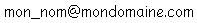

Vous avez créé votre site, et vous y avez ajouté votre adresse e-mail pour que vos visiteurs puissent vous contacter ?
Grosse erreur !!! Maintenant, tous les fournisseurs de Viagra et de Tamiflu ainsi que tous les casinos on-line vont vous harceler de mails pour vous pourrir la vie que vous achetiez leurs produits... :colere:
Dans ce tutoriel, je vais vous expliquer quelques techniques pour empêcher ces vilaines entreprises de vous envoyer des e-mails publicitaires.
Le pourriel est en fait le nom français pour désigner le spam.
Citation : Wikipedia
Le spam, mot d'origine anglaise, désigne les communications électroniques massives, notamment de courrier électronique, sans sollicitation des destinataires, à des fins publicitaires ou malhonnêtes. http://fr.wikipedia.org/wiki/Spam
Pourquoi MON adresse e-mail ?
Ce n'est pas votre adresse e-mail qui intéresse les spammeurs mais n'importe quelle adresse e-mail. Ils ont donc créé des programmes chargés de surfer sur Internet et de récupérer tout ce qui ressemble à une adresse e-mail. Ensuite, ils n'ont plus qu'à envoyer des messages à toutes les adresses qu'ils ont récupérées.
Ce qui définit une adresse e-mail
Le moyen le plus simple de repérer une adresse e-mail est de rechercher l'arobase -> @. Il y est indispensable. Mais d'autres facteurs peuvent aider ces programmes à détecter les adresses e-mail comme par exemple la balise <a href="mailto:....."> qui permet de créer un lien cliquable vers une adresse e-mail.
Il va donc falloir masquer, transformer, crypter, brûler, zigouiller (désolé, je m'emporte) ces données pour empêcher les logiciels de récupérer notre adresse e-mail, tout en la laissant lisible et accessible pour vos visiteurs. ^^
Comme je l'ai dit tout à l'heure, nous devons éviter de laisser apparaître l'arobase @. En xHTML, on ne pourra donc pas faire grand-chose pour masquer votre adresse e-mail si vous utilisez la balise <a href="mailto:votre_e-mail"> car il n'y a aucun moyen de la masquer tout en gardant le lien cliquable opérationnel. Donc, on l'oublie...
Écrire votre adresse e-mail différemment
Notre but sera donc de faire comprendre à l'utilisateur quelle est votre adresse. Vous pouvez par exemple l'écrire en y ajoutant des espaces, en remplaçant le signe @ ou encore en y ajoutant des éléments superflus. Comme par exemple :
Mais à l'heure actuelle, les programmes sont plus intelligents qu'on le croit. Ils arrivent à comprendre certaines de ces techniques, comme par exemple [at] pour dire @. En général, ces programmes parlent anglais et ne comprennent pas le français, pourquoi donc ne pas utiliser ceci, par exemple :
Mais surtout, n'hésitez pas à expliquer à vos visiteurs ce qu'ils doivent modifier dans votre adresse pour pouvoir vous en envoyer. Et aussi de leur dire que vous faites ça pour éviter le SPAM. Pour qu'ils ne vous prennent pas pour des fous si vous écrivez ceci :lol: : [email protected]_LES_CHIFFRES.com.
Les possibilités sont infinies, laissez libre cours à votre imagination.
Mais il faut quand même avouer que ce n'est pas très esthétique, tout ça...
Ajouter des balises <span>
Au lieu d'ajouter des caractères inutiles qui perturberont vos visiteurs, pourquoi ne pas ajouter des balises <span> à la place ? Elles fragmentent votre adresse e-mail sans pour autant modifier son affichage aux utilisateurs...
Dans les 2 cas, on a ajouté des balises <span> pour troubler les logiciels à la recherche d'adresses e-mail, sans troubler le visiteur qui lui ne voit pas les balises.
Dans une image
Rien de tel qu'une image pour écrire votre adresse. Les programmes ne vont pas scanner toutes les images pour vérifier qu'une adresse e-mail ne s'y cache pas.

Mais n'allez surtout pas balancer votre adresse e-mail dans le texte alternatif de l'image :p ; ou alors, pour garder une accessibilité à tous, utilisez la technique précédente pour le texte alternatif.
Dans l'exemple précédent, le visiteur est obligé de retaper l'adresse e-mail lui-même, il ne peut pas faire un copier - coller de votre adresse. Et si je vous dis que j'ai une autre technique pour ça, vous me croyez ?
On crée tout d'abord deux images pour les caractères @ et . Ensuite, vous n'avez plus qu'à remplacer ces deux caractères par les balises img en ajoutant le @ et le . dans l'attribut alt (texte alternatif) de vos images. Ainsi, lorsque vous sélectionnez l'adresse e-mail, que vous la copiez puis la collez dans votre programme de messagerie, l'adresse s'affiche correctement sans avoir à y apporter des modifications. C'est-y pas beau ça ??? ^^
nalreV suov-zelraP
Non, je vous assure, ce n'est pas du patois néo-zélandais, bien que ça en ait l'air. Essayez de le lire à l'envers... C'est beaucoup mieux, n'est-ce pas ?
Si vous n'avez pas tout de suite réussi à déchiffrer le titre, ça veut aussi dire que les programmes recherchant les adresses e-mail non plus. Il existe des propriétés xHTML ou CSS qui permettent de définir si un texte se lit de gauche à droite ou de droite à gauche.
Voyons d'abord comment le faire en xHTML
<bdo dir="rtl">moc.eniamodnom@mon_nom</bdo>
La balise BDO permet de définir le sens d'un texte. Le paramètre dir peut être :
La propriété CSS unicode-bidi permet de définir si on peut changer ou non le sens du texte. Il peut prendre plusieurs valeurs dont Bidi-Override qui lui dit d'appliquer la valeur de la propriété direction. La propriété CSS direction permet de définir la direction du texte, comme par exemple rtl (right to left).
En décimales
Lorsque vous écrivez vos pages web, vous écrivez en général en caractères ASCII. Mais ce n'est pas la seule façon d'écrire du texte. Vous pouvez également l'écrire en décimales. Chaque caractère ASCII a une équivalence décimale. (Et aussi une équivalence binaire pour que l'ordinateur puisse les comprendre, mais là je m'éloigne du sujet principal...) Et la fonction qui permet d'écrire en décimales est : &# suivi de la valeur décimale.
Exemple : @ serra retranscrit par le navigateur en @.
Pour connaître le code décimal d'un caractère ASCII, il vous faut une table de correspondances, par exemple celle de Wikipédia : http://fr.wikipedia.org/wiki/ASCII. C'est le numéro de la colonne "Code en base" : 10 qu'il faut prendre pour avoir le code décimal.
Exemple une fois que toute l'adresse à été convertie
mon_nom@mondomaine.com
<br /> ou <br />
monnom@mondomaine.com
Vous pouvez également convertir le mailto: pour essayer de ne pas trop attirer l'attention des robots. :o
Bon, c'est mon jour de bonté. Voici ce que ça donne
Bonne nouvelle : grâce au JavaScript, on va pouvoir créer des liens cliquables vers votre adresse e-mail, comme le href="mailto:..."
Fragmenter l'adresse e-mail
Le principe est simple : vous allez séparer votre adresse e-mail en plusieurs morceaux, pour ensuite les reconstituer avec du JavaScript.
Regardez cet exemple, je vous l'explique juste après
var nom = 'mon_nom';
var domaine = 'mondomaine';
var extension = 'com';
var $adresse_mail = nom+'@'+domaine+'.'+extension; //Création de l'adresse e-mail
document.write('<a href="mailto:'+$adresse_mail+'"> Contactez-moi</a>'); //Création du lien
On l'intègre dans notre page web
<script type="text/javascript">
var nom = 'mon_nom';
var domaine = 'mondomaine';
var extension = 'com';
var adresse_mail = nom+'@'+domaine+'.'+extension;
</script>
<p>
<script type="text/javascript">
document.write('<a href="mailto:'+adresse_mail+'"> Contactez-moi</a>');
</script>
</p>
Dans cet exemple, on remplit 3 variables séparées (vous pouvez en faire plus), puis on compose notre adresse e-mail avec nos variables, et enfin on affiche le résultat sur notre page à l'aide de la méthode write. Au final, nous avons un lien cliquable vers notre adresse e-mail que les navigateurs (pour autant que le JavaScript soit activé) peuvent interpréter.
Si un programme doué d'une certaine intelligence recherche une adresse e-mail, il pourra éventuellement trouver l'adresse [email protected], en y supprimant les + et les ', mais ne se doutera pas que cela ne représente en fait que le nom de vos variables.
Si vous êtes paranos
Vous pouvez cumuler cette technique avec l'autre technique XHTML qui consiste à écrire votre adresse en décimales. Vous pouvez soit reconstruire votre adresse e-mail avec les &# suivi du nombre décimal de votre caractère, ou alors à l'aide de la méthode String.fromCharCode qui convertit une série de chiffres décimaux en un caractère ASCII.
Mais vous n'allez quand même pas vous amuser à rechercher la correspondance de chacune des lettres de votre adresse e-mail, quand même ? :waw: Si ?
Mais pourtant vous êtes des AS de la programmation maintenant, non...?? :euh: Bon d'accord, j'ai compris... Je vais vous donner un coup de main ! Mais c'est bien parce que vous êtes des zér0s.
Voici le code
// Chaîne que vous souhaitez encoder en décimales
var chaine_alpha = '<a href="mailto:[email protected]>Contactez-moi</a>';
var chaine_decimale = "";
// Répète la boucle 56 fois (la longueur de la chaine_alpha) en ajoutant 1 à i après chaque passage.
for (i=0; i<chaine_alpha.length; i++)
{
// On ajoute le caractère suivant en décimal suivi d'une virgule.
chaine_decimale = chaine_decimale+chaine_alpha.charCodeAt(i)+",";
}
// On supprime la dernière virgule, pour ce faire on récupère le contenu de la chaîne à
// partir de la position 0 jusqu'à la position 202 (longueur de la chaine_decimale - 1)
chaine_decimale = chaine_decimale.substr(0, chaine_decimale.length-1);
// Affiche la fonction JavaScript qu'il vous faudra ajouter à votre programme pour qu'il affiche votre chaine_alpha encodée.
document.write("document.write(String.fromCharCode("+chaine_decimale+"));");
La propriété .length vous permet de connaître la longueur d'une chaîne. La méthode charCodeAtcharCodeAt(n) vous permet de connaître la valeur décimale du caractère en position n. (Attention : la première position d'une chaîne commence à la position 0.) la méthode substr(substr(x,y) vous permet de récupérer la partie d'une chaîne de caractères depuis la position x à y (Attention : la première position d'une chaîne commence à la position 0.)
Pour le reste, je pense avoir assez bien commenté le code pour qu'il soit compréhensible.
Si vous ne maîtrisez absolument pas le JavaScript, il y a deux big-tutos très bien sur ce site :
En PHP, la solution est totalement autre. Nous n'afficherons pas l'adresse e-mail sur le site, mais proposerons aux visiteurs de nous contacter via un formulaire en ligne, à l'intérieur du site.
Pour cela, nous allons créer un formulaire avec plusieurs champs et envoyer le contenu du formulaire par e-mail. Vous êtes prêts ? Alors allons-y...
Formulaire de contact
Tout d'abord, il vous faut créer votre formulaire. Ajoutez un champ Nom, un champ Adresse e-mail pour que nous puissions répondre à cette personne, et deux champs Objet et Texte pour que la personne puisse rédiger le contenu du message.
Bien entendu, vous pouvez ajouter d'autres champs si vous désirez avoir plus d'infos sur la personne (téléphone, fax, etc.) ou même une case à cocher sur le sujet du mail (demande d'info, commentaire, service après-vente...)
Jusque là, rien de bien sorcier si vous avez suivi le cours de M@teo21 sur les formulaires. Une petite couche de CSS pour embellir le tout et le tour est joué. Voici un tuto sympa pour aligner ses formulaires.
Maintenant il faut nous attaquer à la partie PHP. Je vais vous écrire le code et vous le détailler juste après.
Envoi d'e-mail.php
<?php
$destinataire="[email protected]";
$expediteur = "From: ".htmlentities($_POST['nom'], ENT_QUOTES)." <".htmlentities($_POST['email'], ENT_QUOTES).">";
$objet = htmlentities($_POST['objet'], ENT_QUOTES);
$message = htmlentities($_POST['message'], ENT_QUOTES);
if(mail($destinataire,$objet,$message,$expediteur))
{ echo "Le message a bien été envoyé, merci beaucoup.";}
else
{ echo "Une erreur s'est produite";}
?>
Dans le code ci-dessus, il n'y a que le strict minimum, nous verrons juste après ce que nous pourrons ajouter pour l'améliorer.
Tout d'abord j'ai créé les variables $objet et $message pour récupérer le message de votre visiteur. Dans la variable $destinataire, vous mettez votre adresse e-mail. Elle est dans votre code PHP mais n'est pas affichée sur votre site. Vous ne courez donc absolument pas le risque qu'un robot la trouve. ;)
Dans la variable $expediteur j'ai ajouté From: suivi du nom de l'expediteur (récupéré depuis le formulaire) ainsi que son adresse e-mail entre chevrons < >. Il s'agit en fait de l'entête du mail (header). Il peut contenir l'entête From, mais aussi Cc: (copie du mail), Bcc (copie cachée du mail), Reply-To (pour recevoir un avis de non-distribution) et bien d'autres encore... Les entêtes sont séparés par des retours à la ligne ("\r\n") pour le retour chariot et le passage à la ligne suivante).
Vous vous rappelez du " " ?? Bon : vous auriez très bien pu ouvrir les guillemets, faire votre retour à la ligne dans le code puis les refermer ensuite. Personnellement, je trouve ceci plus propre comme cela, mais à chacun sa manière de coder...
Ainsi, vous recevrez le mail suivant
Citation : e-mail de Tartempion
Nom : Tartempion Prénom : George Téléphone : 01 23 45 67 Fax : 987 65 43 21 ______________________ Bonjour, je vous écris pour vous dire que.. Ehe... En fait je ne m'en rappelle plus. Désolé, au revoir.
Maintenant, vous pouvez contrôler que les champs ont bien été remplis et vérifier que l'adresse e-mail en soit bien une grâce aux regex.
Pour remédier à ceci, vous pouvez ajouter une image de contrôle pour vérifier que c'est bien un "humain" qui essaie de vous envoyer un e-mail. Voici 2 tutos intéressants à ce sujet :
Outre faire l'asocial qui ne souhaite pas recevoir d'e-mails, vous pouvez également utiliser une des techniques suivantes.
Transformer votre adresse e-mail en une adresse http
Le site de Cerbermail vous propose de sécuriser votre adresse e-mail en la transformant en une URL. Vous évitez ainsi toute la partie de création d'une image de vérification ou autre. Vous n'avez qu'à entrer votre adresse e-mail sur ce site et il vous retournera l'URL à insérer sur le vôtre. Une fois que vos visiteurs cliquent sur ce lien, ils sont invités à entrer ce qu'ils voient dans une image. Ensuite, votre adresse e-mail s'affiche en clair.
Utiliser une adresse e-mail poubelle
Le site KasMail vous permet de créer une adresse jetable. Vous n'avez qu'à en créer une pendant 30 jours, puis de la renouveler tous les mois. Ainsi, la quantité de spams reçus reste plus ou moins acceptable.
Le site Yopmail propose un service un tout petit peu différent. Plutôt que de créer une adresse poubelle à votre nom pour une durée limitée, toutes les adresses sont activées et accessibles par n'importe qui anonymement. Mais il faut avouer que c'est zéro, niveau confidentialité, puisque tout le monde pourra consulter vos e-mails à n'importe quel moment depuis le site de Yopmail. :(
Certains fournisseurs d'adresses e-mail sont plus ou moins bien équipés d'un anti-spam. Barracuda, pour prendre un exemple, est un appareil qui se connecte entre le serveur de messagerie et Internet. Il scanne tous les e-mails entrant pour vérifier que ce ne sont pas des spams. Il reçoit des mises à jour, comme un antivirus, et il est entièrement paramétrable. Mais son coût est extrêmement élevé, il est donc réservé aux entreprises. En général, si votre site est chez un hébergeur payant, vous avez une assez bonne couverture anti-spam. Mais certains spams passent quand même, ou votre hébergeur vous ajoute simplement ***SPAM*** dans l'objet du mail.
Sur votre ordinateur
Certains logiciels anti-spam peuvent filtrer l'arrivée de vos nouveaux e-mails pour détecter les SPAM éventuels. Mais le plus souvent, votre programme de messagerie en est équipé, comme par exemple Mozilla Thunderbird.
Luttons contre le spam !!!
Signal Spam
Ce n'est pas tout de se protéger contre le spam, mais pensez également aux autres... Lorsque vous recevez du spam, ne vous contentez pas simplement de le détruire, mais agissez en le signalant comme étant du spam à l'association Signal Spam !
Ensuite, grâce à vous tous, cette association conduit toutes les actions nécessaires pour lutter contre le spam et ses effets. N'hésitez donc pas, inscrivez-vous sur leur site.
Ce site propose une contre-attaque aux spammeurs que je trouve assez sympa. Il consiste à ajouter un lien comme celui-ci vers une page de leur site qui génère plein d'adresses e-mail bidon aléatoirement. Ainsi, lorsqu'un robot analyse votre site et suit les liens de celui-ci, il tombe sur cette page qui va pourrir sa base de données en ajoutant tout plein d'adresses non-utilisées.